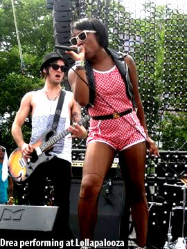

HE SAY SHE SAY: SAY WHAT?! CONTINUED...
By: Ciera Mckissick
Mano has made quite a name for himself. He has worked with a ton of artists on a wide spectrum of music types including: M.I.A, Santigold, Good Charlotte, Matt and Kim, and of course the Chicago counterparts Kanye West, Lupe Fiasco and his cousin Hollywood Holt. He even produced the song for Orbitz 35 pack gum, with the familiar hook “I’m droppin 35/I’m droppin 35,” sung by the UK’s Big Pack. He has been featured in countless magazines around Chicago, and is referred to as the “connoisseur of connoisseurs” by Grey Goose Entertainment and Complex. He has dee jayed around the globe, and is considered one of the rising icons of our time—and he’s just getting his feet wet.
Mano has been making music for almost 15 years, and he’s never had any musical training. He recalls that singing in a choir was the closest he ever got to being a musician. Making music didn’t just fall into his hands though, he says he’s always been interested in making music. Especially when he felt that sense of accomplishment that comes with composing and making a song of his own.
“Art to me is creating all types of expression. I never got that when I was younger,” Mano explains. “But I learned being older that anytime I’m aggravated, sad, or any of those emotions are brought out, I’m always creative during those times and it just fuels me to make really good stuff whether visual or sonically,” he said.
Lack of training can get you pretty far in his case. Having gone to school for visual arts at Columbia Chicago, Mano got discovered curating an art show with Lupe Fiasco, dropped out and from then on began his journey into musical wizardry and stardom. Getting discovered was just the catalyst for Mano. Becoming Hollywood Holt and M.I.A’s DJ was the exposure he needed to put him over the top.
He’s tried just about a little bit of everything, from producing, to DJing, to marketing and advertising. “My hands are in so many areas,” Mano says. “I’m always planting seeds. So when everything comes apart, I’m still going to have something going on. When one thing stops, the next thing keeps going,” he says.
He Say She Say sprung up slowly over time between two acquaintances that both happened to have the same musical interests, and kind of just fell into working with each other. They knew each other through friends from Milwaukee, and have shared a lot of the same friends in the b-boy and art scene. Both ended up at Columbia and became friends.
“We were into all the same music, whether it be like, the alternative classic rock, 80’s punk rock, down tempo, or hip hop,” Mano says. “And then, it was cool because we were able to put each other on different stuff. Like she would put me on shit, and I would put her on shit that she didn’t know. It just came together with our sound too because we actually wanted to make the same type of music,” he said.
Mano describes their style and methodology as something he’s always wanted to do, so when the opportunity presented itself, they both jumped at the chance. If Smith and Mano had never joined forces, Smith says she might be off doing sociology, which is what she majored in at Columbia, or being a journalist of some sort.
Music has always been a passion for Smith. She’s been playing guitar for as long as she can remember, most of it acoustic, and has been writing poetry for even longer. But, Smith always felt that she would be behind the scenes, rather than at the forefront of the scene, partly because she describes herself as socially awkward. She still can’t adjust to fans coming up to her and fawning over her and their music. She admits though, that she does feel at home on stage, and in the studio, and has become a lot more confident and sure of herself.
“I think it’s because I’m in control of the situation, and I know what I’m going to say and do,” Smith explains. “I’m super inside of my head when I’m in the studio. I’m hyper too— I want to do so many things at once. Mano is more focused, it’s starting to rub off,” she said.
She described the Glow in the Dark Tour as “overwhelming in the best possible way.” The same goes for performing shows at larger venues, and their slot for Lollapalooza. The first year they performed at Lollapalooza, He Say She Say was just a sect of Mano’s DJ set.
 “Lolla was cool because it our first huge show that was just us,” she says. “The crowd was fun. They were restless though because it was hot as hell that day— I thought I was going to die, but it was cool because despite the fact that we had earlier time slot and it was hot as hell out, the crowd was still dancing,” she said. They also got the chance to perform Crash Dummie big time at Madison Square Garden. Smith recalls being freaked out because they were in front of 20,000 people, and you could “hear and see every last one of them.”
A happy and pumped up crowd can make or break a show, and Smith has learned from her music mentors that stage presence is key. “No one is selling big numbers in CD sales these days. You have to be able to sell yourself to an audience with your showmanship,” she explains. “You have to make the crowd believe you. Touring and live shows are a super important to a band's success, and if you suck at that, it’s hard to convince someone to buy anything that has to do with you— whether it’s a CD or merchandise,” she said.
He Say She Say is definitely convincing fans that the stage is where they belong. With an album on the way, plenty of shows booked, and an adoring fan base, He Say She Say is still on the train to glory, next stop—music iconography.
“The biggest thing I’m concerned and focused on right now though is branding myself to become an icon, like a young icon, and designing or creating really awesome things that’s going to separate me from everything that’s prominent out there right now,” Mano says. “Because that’s what all of this shit counts for at the end of the day—it’s individuality. If you have something no one else has, then of course people are going to want more of that,” he said.
For more He Say She Say, check out their Myspace page!